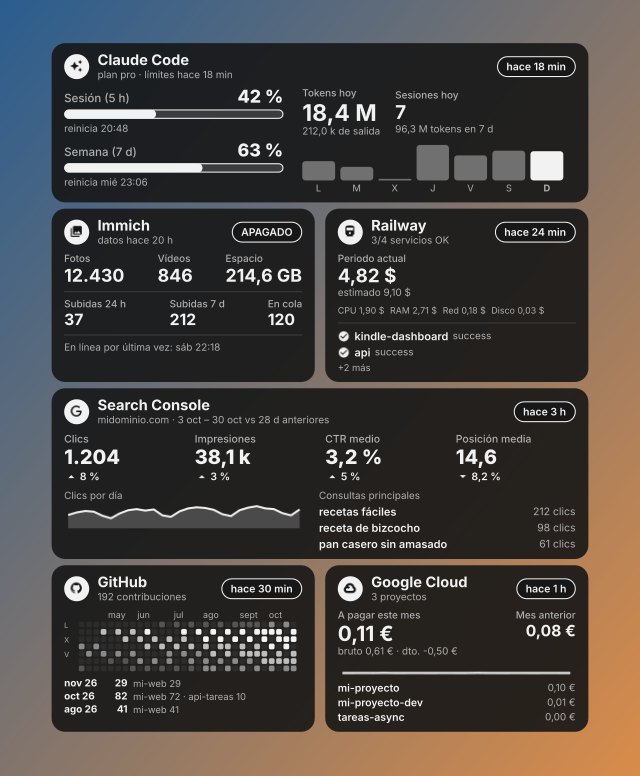

Widget de escritorio
GET /widget.png?key=DASH_KEY&w=700&theme=dark dibuja las tarjetas del dashboard con fondo transparente al
ancho pedido (240–2144 px), en tema dark (tarjetas oscuras, texto claro) o light (tarjetas blancas, texto
negro, como el Kindle). Con &page=N se elige la pantalla.
El widget no lleva la cabecera de hora y fecha del Kindle (ya están en la barra de tareas) y su alto es el de las
tarjetas, sin hueco abajo. Con &header=1 vuelve la cabecera y el alto sigue la proporción del Kindle.

El skin de Rainmeter/ lo descarga cada 5 minutos y lo pinta en el escritorio: encima del fondo de Windows y
debajo de todas las ventanas. Un clic abre /web; el menú del botón derecho tiene «Abrir en el navegador» y
«Actualizar ahora». Requiere Rainmeter (winget install Rainmeter.Rainmeter).
powershell -ExecutionPolicy Bypass -File Rainmeter\install.ps1 -ServerUrl https://TU-APP.up.railway.app # 700 px, monitor 1, a la derecha
powershell -ExecutionPolicy Bypass -File Rainmeter\install.ps1 -Width 600 -Monitor 2 -Align 0 # servidor local, 600 px, monitor 2, a la izquierda
powershell -ExecutionPolicy Bypass -File Rainmeter\install.ps1 -Theme light # tema claro, como el Kindle
Sin -ServerUrl, el widget usa http://localhost:3000.
Varias pantallas a la vez
-Page elige la pantalla: 0 las métricas (por defecto) y 1 la red local. Rainmeter solo carga una piel por
carpeta, así que cada pantalla se instala en su propia carpeta y se pueden ver juntas: la 0 en
Skins\KindleDashboard y la N en Skins\KindleDashboard-Pantalla<N+1>.
powershell -ExecutionPolicy Bypass -File Rainmeter\install.ps1 -ServerUrl https://TU-APP.up.railway.app -Page 0 -Align 1 # métricas, a la derecha
powershell -ExecutionPolicy Bypass -File Rainmeter\install.ps1 -ServerUrl https://TU-APP.up.railway.app -Page 1 -Align 0 # red local, a la izquierda
Para quitar una, descárgala desde Rainmeter (clic derecho → Descargar skin) o borra su carpeta.
El instalador copia el skin a Documentos\Rainmeter\Skins\KindleDashboard, crea @Resources\Variables.inc con la
DASH_KEY del .env del repositorio (o la de -Key) y lo carga. Variables.inc no se sube a git. Para cambiar
algo a mano, edita ese archivo (servidor, clave, ancho, tema, monitor, lado, margen, frecuencia) y refresca el
skin. Los iconos del escritorio quedan por encima del widget.